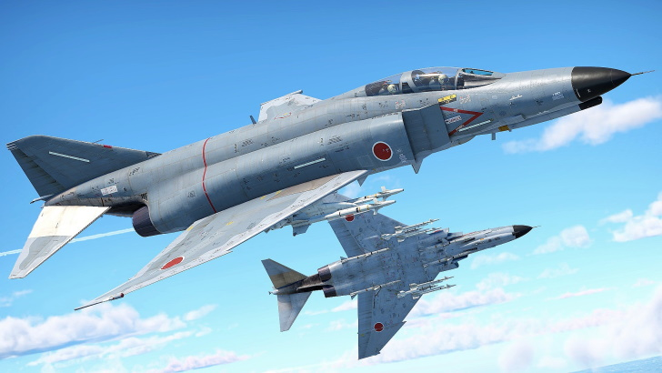

Welcome to War Thunder

日本 RankVII ジェット戦闘機 F-4EJ Kai Phantom II
Ver 2.13以前
概要
Update 2.9 “Direct Hit”にて追加された。
F-4EJの近代化改修型で、ルックダウン性能に優れる新型レーダーや高機動の新型スパローに加え、HUDやCCIP/CCRP
射爆撃計算など充実の機能を備える。
F-4EJ共々、2021年3月まで航空自衛隊で現役を務めていた。
機体情報(v2.*)
必要経費
BR・報酬・修理
機体性能
レーダー
h3タグの見出しの下に記述する本文です。
h3タグは、h2タグの中にもう一つ見出しを作りたい時に使用します。
リンク
武装
弾薬
解説
この記事のまとめを記述します。
特徴
－－加筆求む－－
立ち回り
【アーケードバトル】
－－加筆求む－－
【リアリスティックバトル】
※E2スパローまで改修が終わっている前提
開幕はエリアの左右にそれつつ高度1000m以下を保ちながら飛行し、味方と敵が本格的に戦い始めたところに
横やりをいれるのがメインとなる。
この時の立ち回りとして速度を保ちつつ、味方機が多いほうに抜けられるように、かつ自機とヘッドオンしてくれそうな
敵機を狙うのが重要。敵機とヘッドオンの状態に持ち込めれば5~6kmほどでロックオン、3~4kmでE2スパローを発射、
あとは敵機の銃撃を避けるように斜めに飛行すれば大半はそのまま撃墜できる。
そのほか、ヘッドオンを仕掛ける際に注意すべき機体としてアメリカのF-4Jがいる。F-4JはEJ改と同じようなレーダー、
ミサイルを持っているため、ヘッドオンになると仲良死してしまう。またE2スパローは敵機を追いかける状況下では
発射しても命中を期待できないので、敵機と向かい合う場合はE2スパロー、追いかける場合は9Pと使い分けよう。
－－加筆求む－－
【シミュレーターバトル】
－－加筆求む－－
史実
小ネタ
外部リンク
もとにしたサイトのリンク